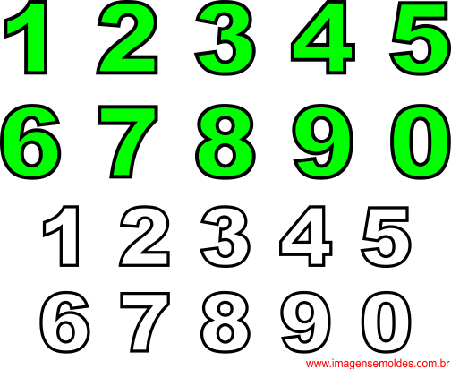

Janeiro de 2018 por Maykel Trejo
Dado dois cangurus em uma linha numérica prontos para saltar na direção
positiva (ou seja, em direção ao infinito positivo). O primeiro canguru começa na
localização e se move a uma taxa de metros por salto. O segundo canguru começa
na localização e se move a uma taxa de metros por salto. Dado os locais iniciais e
as taxas de movimento para cada canguru, você pode determinar quando eles
cairão no mesmo local ao mesmo tempo?
Formato de Entrada
Uma única linha de quatro inteiros separados por espaços que denotam os valores
respectivos de x1, v1, x2, e v2.

Enero de 2018 por Maykel Trejo
Dado cinco inteiros positivos, encontre os valores mínimos e máximos que podem
ser calculados somando exatamente quatro dos cinco inteiros. Em seguida, imprima
os valores mínimos e máximos respectivos como uma única linha de dois
segmentos longos separados por espaço.Formato de Entrada
Uma única linha de cinco inteiros separados por espaço
Cada número inteiro está no intervalo inclusivo [1, 10⁹]
Enero de 2018 por Maykel Trejo
Dada uma matriz com elementos, você pode classificar esta matriz em ordem
crescente usando apenas uma das seguintes operações?
1. Troque dois elementos.
2. Inverta um sub-segmento.
Formato de Entrada
A primeira linha contém um único inteiro, n, que indica o tamanho da matriz.
A próxima linha contém n inteiros separados por espaços.